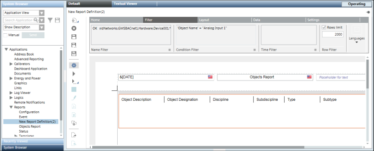

Apply Filters to Condense the Displayed Output
- You have selected and configured the report to which you want to apply filters.
- Click the Filter tab and apply the following filters as needed:
- Name Filter: Enables you to filter the data on the basis of object names displayed in the report.
- Condition Filter: Displays data that matches the specified filter condition.
- Time Filter: Displays data that matches with the specified date/time value.
- Row Filter: Displays the number of rows specified.
- Graphics Filter: Displays the graphics and viewports of the object that is passed as the name filter to the report.

- Save the report definition by clicking Save
 .
.
- The report is configured according to the specified filters.